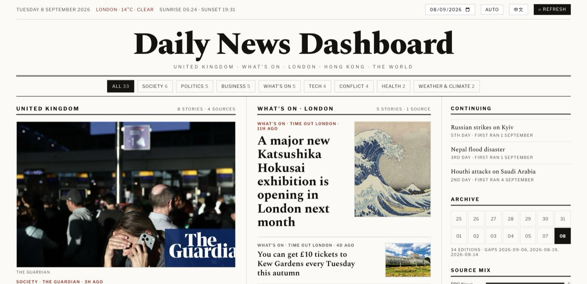
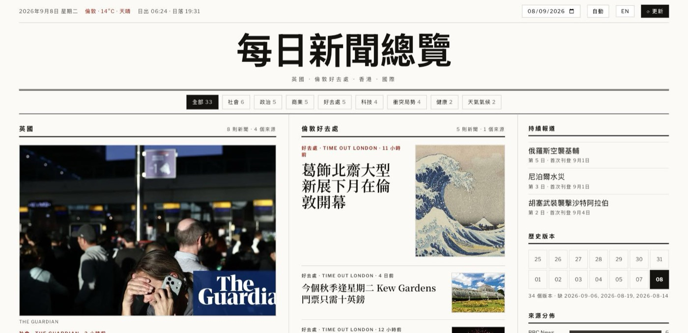
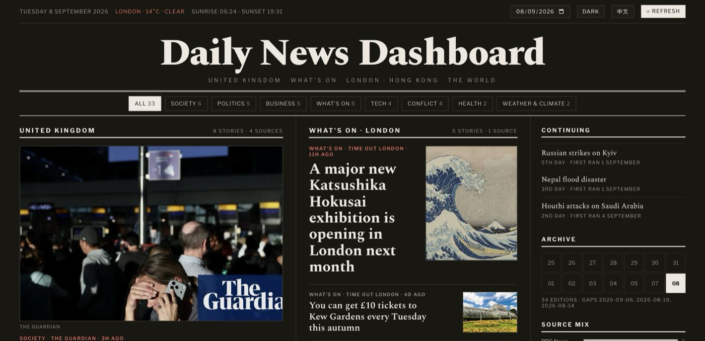

Side project
Daily News Dashboard
Bilingual EN/粵語 newspaper-style briefing covering UK, London, Hong Kong and Global, rebuilt every morning.

Background
A daily paper written for one reader. It weights London first, keeps a Hong Kong section alongside UK and Global, and reads as a broadsheet rather than a feed — in English or Cantonese, at a tap.
How it works
- The model writes the content, code writes the layout — an agent gathers the day’s stories and emits a
data.json; a Python renderer owns every layout decision. Changing the design used to mean editing a prose spec and paying for a ten-minute generation to find out what it did. It now renders in milliseconds from yesterday’s data, and the same way twice. - Bounded, because it once wasn’t — an edit asking the agent to keep re-checking sources turned an eight-minute job into five consecutive runs of three to seventeen hours, unnoticed for five days. A budget written in a prompt is advisory; the wrapper that replaced it enforces a hard timeout that kills the whole process group, a lock against overlapping runs, and a dead-man’s switch — the only thing that catches a job that never started at all.
- Thirty feeds, each one verified — sources are checked rather than assumed, and the dead ones are written down so no run pays to retry them. Category-specific feeds exist so every filter chip has something behind it.
- Bilingual all the way down — every headline, summary, category, label and status line exists in both languages, so the toggle swaps the page rather than only the headlines.
Screens


What it changed
The failure and the success were visually identical: the job died, and yesterday’s front page sat there looking exactly like a page that had just been built. That is the shape of most AI failure inside a product — a model that returns nothing looks like a quiet day, and a confident wrong answer looks like the feature working. Neither trips the error states we spent a decade learning to design. So these are the questions I now ask in the same breath as “what does this feature do”:
- What does it look like when this returns nothing? Not an error — nothing.
- How does a person tell a confident answer from a correct one?
- Who finds out, and how, if it quietly stops?
- What is the honest thing to show while we don’t know yet?